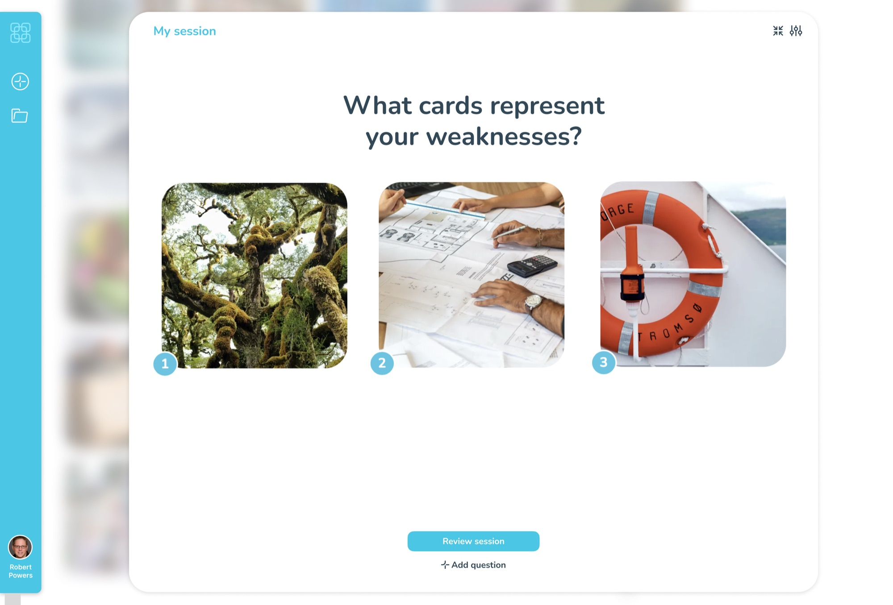
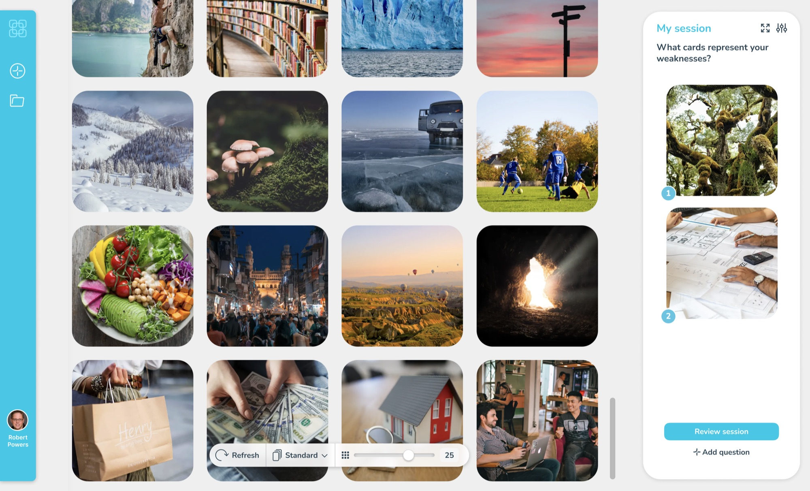
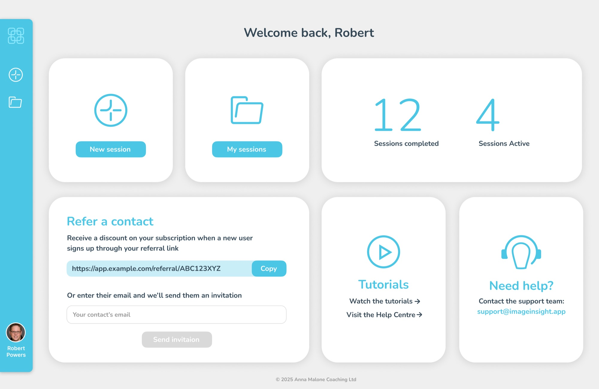
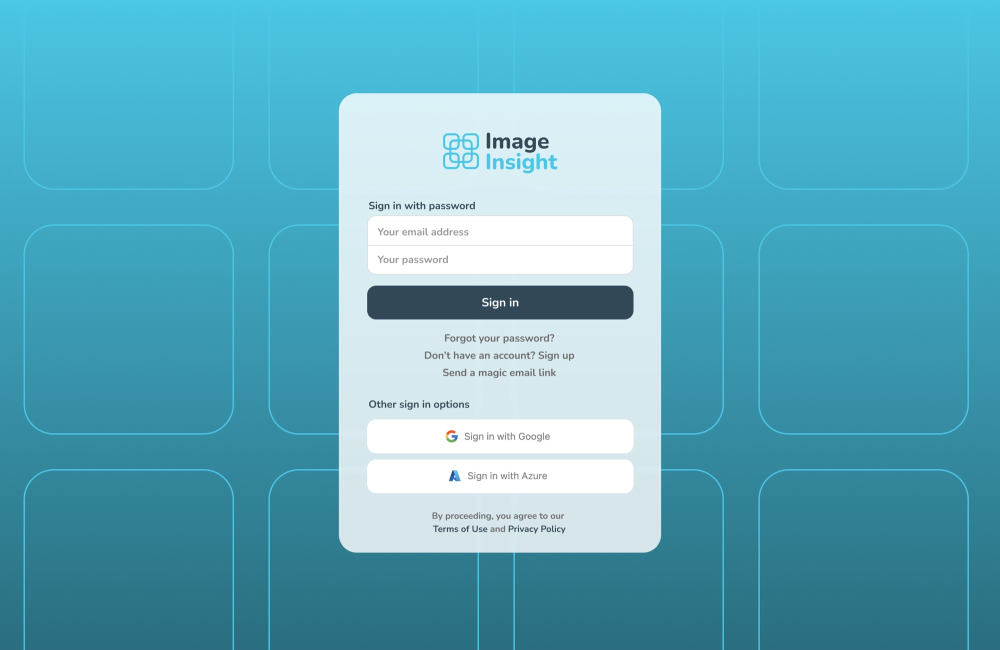
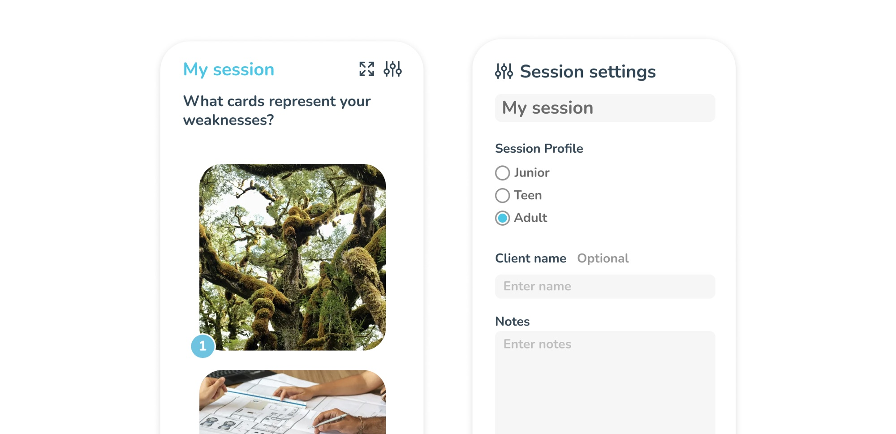
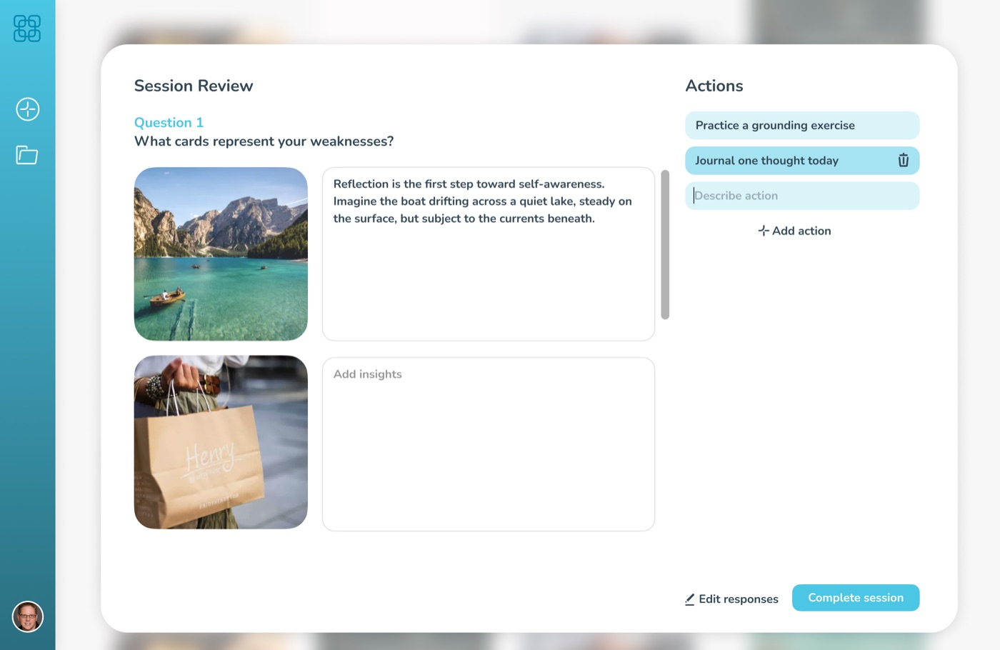
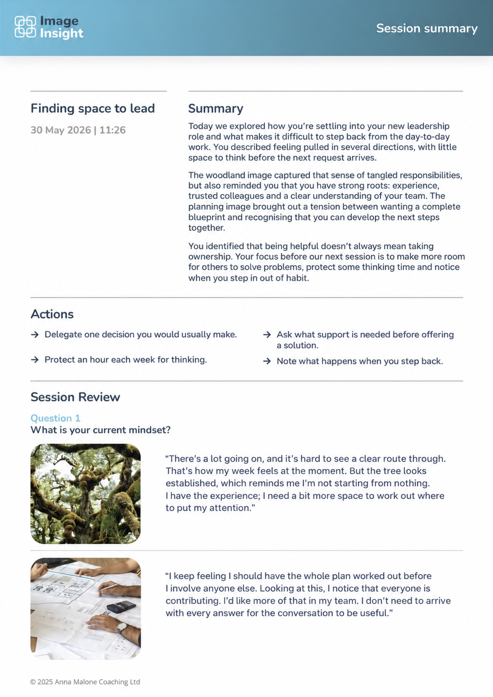
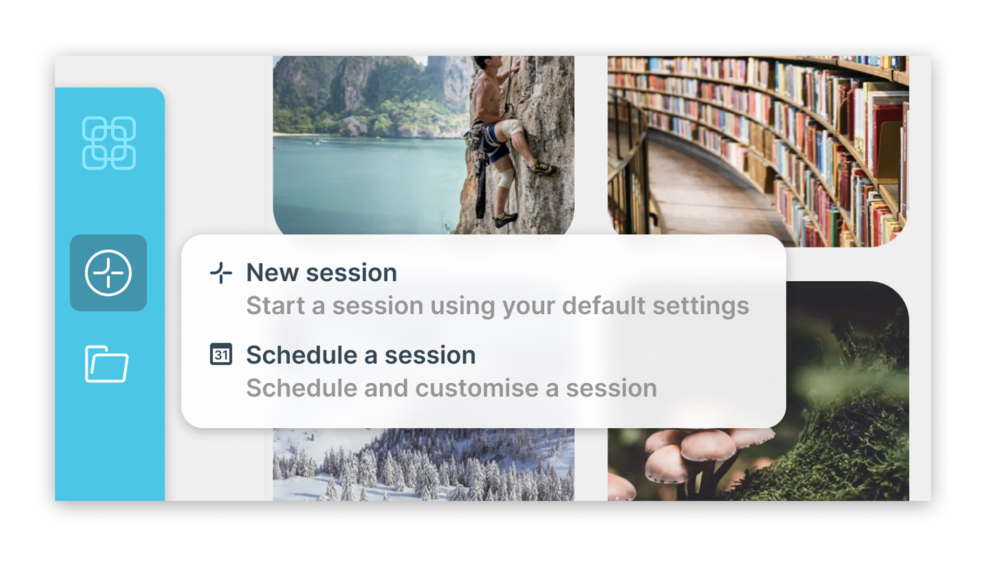
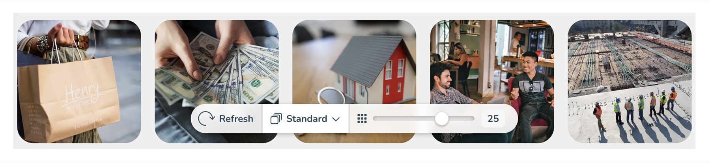

Making space for deeper reflection
Digital coaching tool that uses images and visual metaphors to prompt deeper reflection in online and face-to-face sessions.
Interaction designVisual designAccessibility
- Simplified a working prototype into a calm, low-friction coaching experience
- Adapted to different participants’ needs, based on beta testing
- Refined the session workflow in response to feedback from a school’s beta

Image Insight’s co-founder approached me with a working prototype for digital coaching cards. The concept was there, but the visual design felt clunky and the user experience needed simplifying.
I refined the interface and key interactions, creating an elegant, low-friction experience where imagery and conversation take centre stage. I subsequently helped refine the product in response to beta feedback.
Bringing coaching cards into a digital session
Physical image cards give people a starting point for conversations that can be difficult to begin with words alone. Taking that approach online makes it possible to explore images together during a video call, then capture the reflections and actions in one place.
The tool was intended for coaches and therapists, including those working in schools with children from primary age through to teenagers. The design needed to support the conversation without becoming another task to manage.

A calm environment for reflection
At Quantemplate, I designed deep capabilities for power users. Image Insight was about stripping things away, letting imagery and conversation take centre stage.
I retained the original UI concept, introducing whitespace, calming colours and a clearer visual hierarchy. This was informed by my prior work in education and healthcare, where a ‘therapeutic environment’ has been shown to improve wellbeing.
I also identified bottlenecks and points of confusion, making actions clearer across the app. Settings and login pages continued the same calm visual approach.
I designed the logo around the app’s signature image grid, reflecting connection and personal growth.
More visual identities and material explorations →


Keeping imagery and conversation at the centre
The coach asks an open-ended question and the participant selects images from a grid. These become talking points, with reflections translated into actions. A downloadable PDF records the session, with key actions foregrounded.
Adult, teen and child modes change the selection of images shown. AI can describe images to help narrow the selection.
My focus was on making the surrounding interface simple enough for the coach and participant to stay with the conversation.

Validating the approach
The app was trialled in a beta with a number of schools. Feedback on the design approach was overwhelmingly positive.
It gave a focus to answering the question, without distracting from the question. Helen, Client · Source
I love the simplicity. Ed, Head Teacher / Coach · Source


Refining around real sessions
Feedback from the beta cohort highlighted two areas where the interface needed to be more flexible.
Starting a session
Coaches wanted to begin immediately rather than schedule something for later. Engineering proposed a separate instant-session button. I made the case for one clear entry point for a new session, avoiding competing actions for essentially the same task.

Controlling the image grid
Coaches reported that a large grid could feel overwhelming for some participants, including some neurodivergent children and young people. We added a slider to control how many images were displayed. I floated it over the bottom of the grid so coaches could see the effect immediately and adjust it during the conversation.

A gallery selector let coaches choose different image collections, while a refresh button brought up a new batch. Together, these controls made it easier to adapt the session to the person taking part.
An interface that leaves room for conversation
The result was a calmer, clearer coaching tool, refined through use in schools. Feedback from coaches highlighted its simplicity, while co-founder Anna Malone directly credited the design work with making the product easier to use.
Tom has been crucial in transforming Image Insight from a clunky MVP to an intuitive, easy-to-use product that I’m really proud of. Anna Malone, Co-founder, Image Insight
The design gives coaches control over the session while keeping imagery and conversation at the centre of the experience.
 Zonefully
Connecting long-term goals to everyday routines
A planning app that connects personal goals with recurring routines and a calendar to put them into practice.
Interaction designVisual design
Zonefully
Connecting long-term goals to everyday routines
A planning app that connects personal goals with recurring routines and a calendar to put them into practice.
Interaction designVisual design